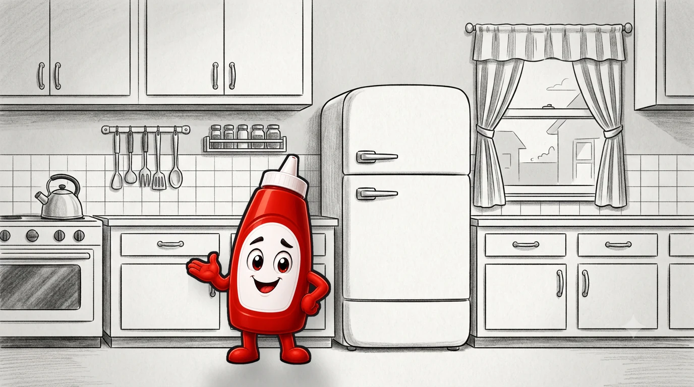

A ONE-BOTTLE STUDIO
iTryKetchup Studio
Small games, audio stories, and honest patch notes — served fresh from the test kitchen.

A ONE-BOTTLE STUDIO
Small games, audio stories, and honest patch notes — served fresh from the test kitchen.